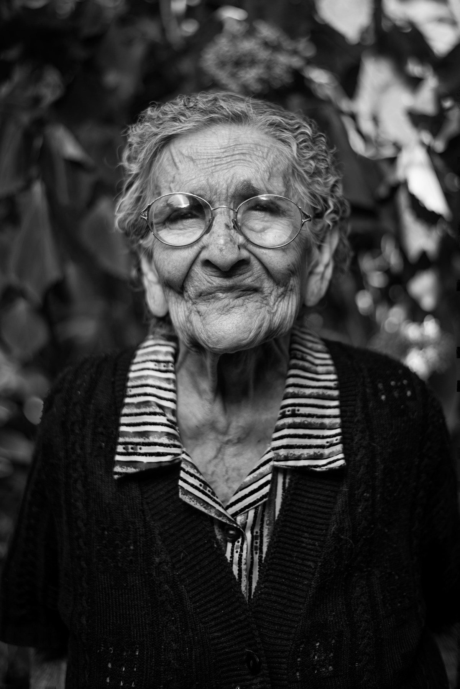

VOCÊ CHEGOU AO FIM DESTA LEITURA.
Um novo olhar sobre a idade
Edição especial2026
Trabalho, longevidade e sociedade
Idade não é barreira. É trajetória.
Etarismo no mercado de trabalho
Quando a idade substitui a competência.
Pesquisa que conecta gerações.
Conheça os 6 integrantes

01 — CAPAA gente precisa ouvir.
uma porta fechada.
PARA ENTENDER
O CENÁRIO
Além dos
estereótipos.
32,1milhões
de brasileiros têm 60 anos ou mais
IBGE · Censo 2022
24,4%
das pessoas 60+ estavam ocupadas
IBGE · PNAD Contínua 2024
43,3%
dos ocupados 60+ eram conta própria
IBGE · PNAD Contínua 2024
01 / Nesta edição
Histórias que merecem
um novo olhar.
Uma leitura. Muitas perspectivas.
02 / Carta de abertura
Quando a idade
substitui a competência.
Em “A ‘juventude’ é apenas uma palavra”, Pierre Bourdieu mostra que as fronteiras etárias são construídas socialmente. No mercado de trabalho brasileiro, essa classificação torna-se desigualdade quando a idade substitui a avaliação de competências.
Ler o editorial completo03 / A realidade em números
O país mudou.
E o mercado?
A procura de Sibele acontece em um Brasil que já mudou de idade. Nas Projeções da População revistas pelo IBGE em 2024, o grupo com 60 anos ou mais passou de 8,7% da população em 2000 para 15,6% em 2023. Para 2070, a projeção chega a 37,8%.
Entenda os dadosDados com contexto.Informação sem estereótipos.
Um Brasil que envelhece
POPULAÇÃO 60+
15,6%da população brasileira em 2023
IBGE · Projeções da População, revisão 2024
Clique nas barras para explorar
Estimativas retrospectivas para 2000 e 2023. A projeção para 2070 está condicionada às hipóteses demográficas.
04 / Glossário de leitura
Entender também
é transformar.
Os conceitos que atravessam esta edição.
Clique e amplie seu repertório.
05 / Quem faz a revista
Uma pesquisa.
Seis perspectivas.
Grupo de pesquisa sobre etarismo.
Um trabalho para ampliar a conversa.